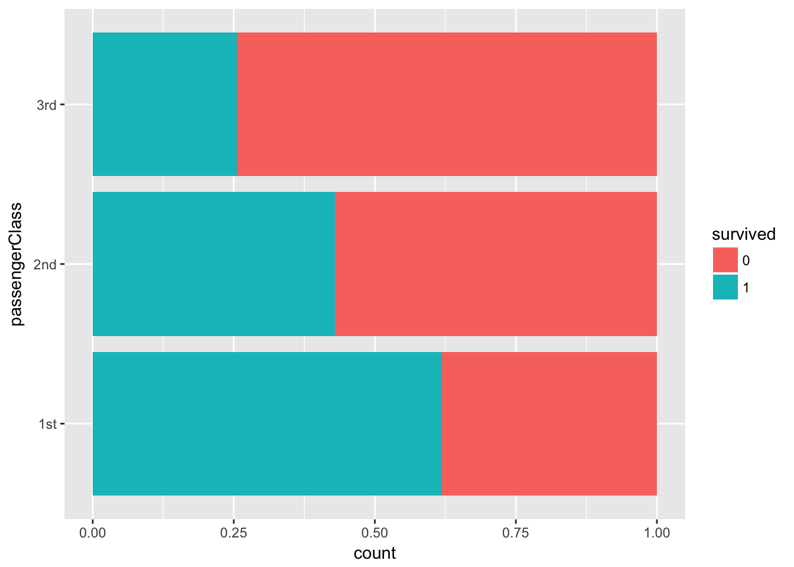
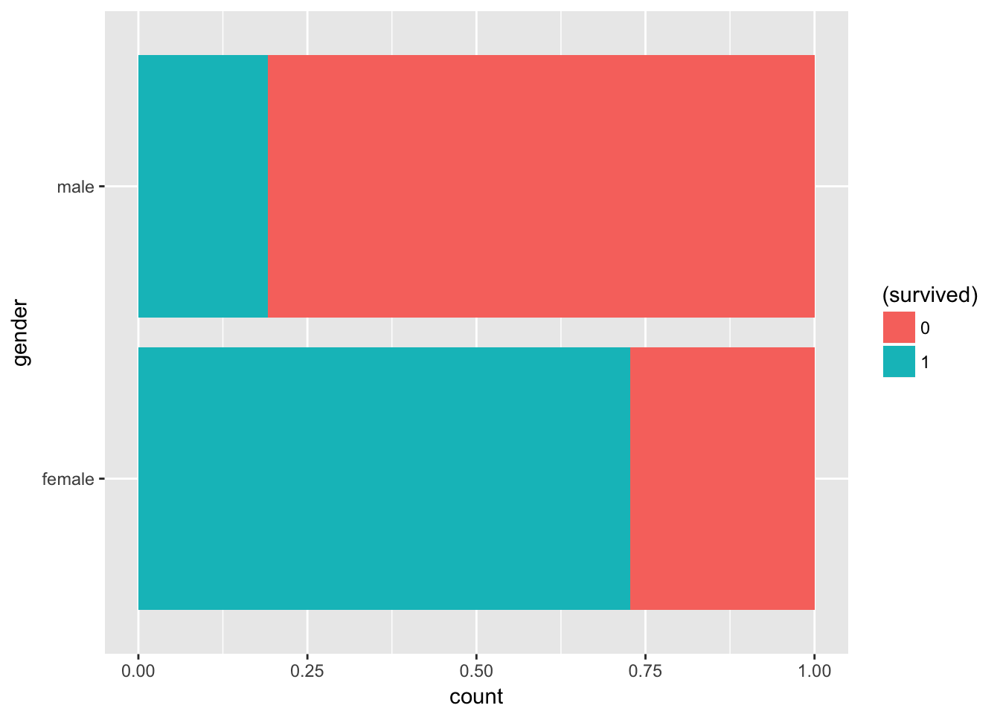
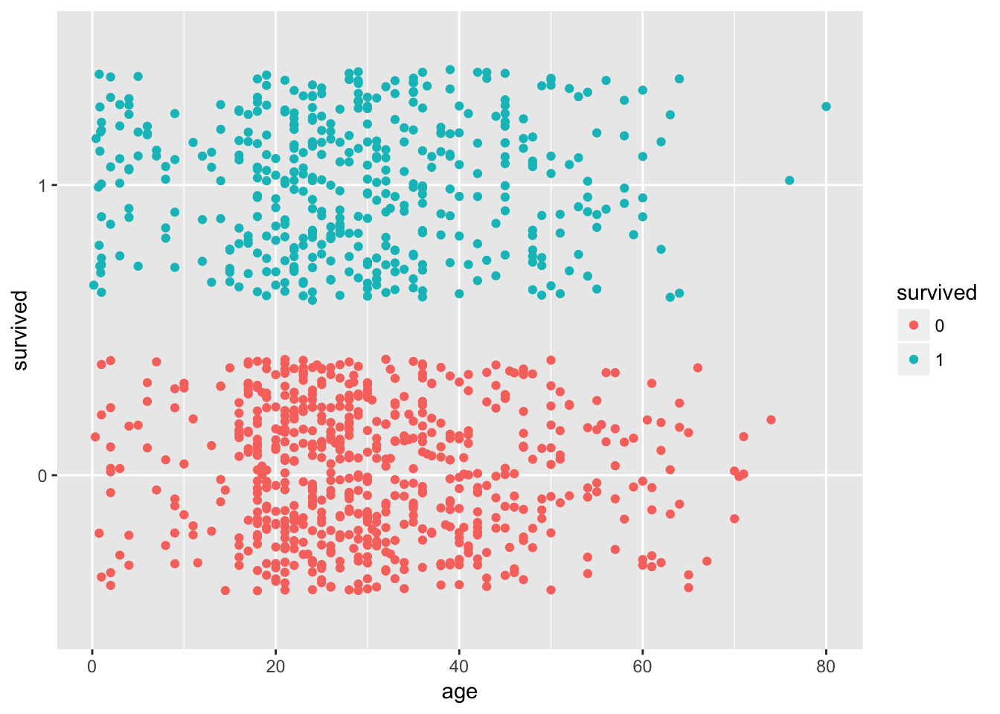
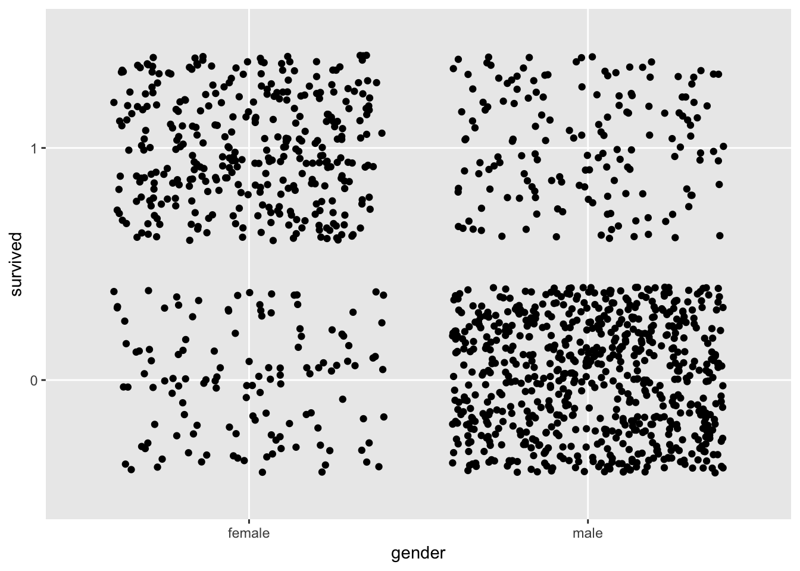
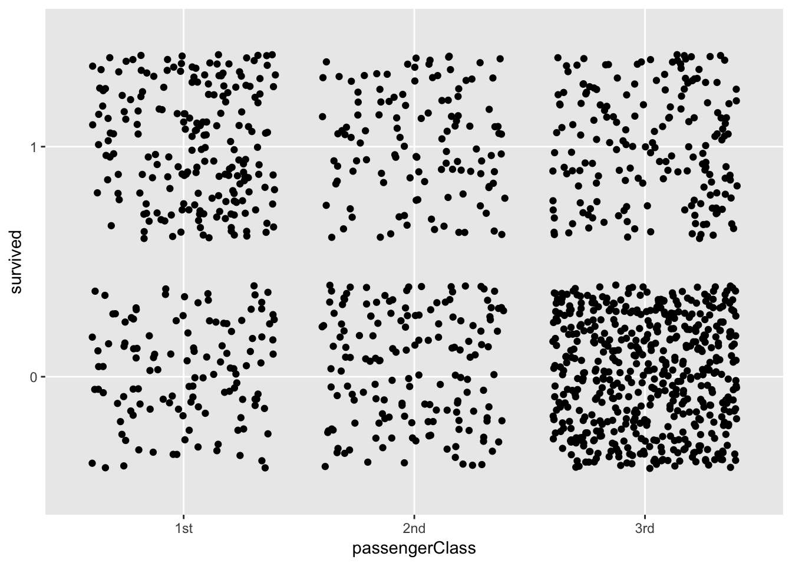

library(tidyverse)
# インストールしていなければ，install.packages("tidyverse")この操作は右上の「import Dataset」アイコンから可能。
options(scipen=100) # 指数表示を避けるためこの作業は必須ではないですが，私の場合，データをこねくり回しても元に戻せるようにバックアップを取ることが多いです。
d = titanic_datahead(d)summary(d)## name survived gender age
## Length:1309 Min. :0.000 Length:1309 Length:1309
## Class :character 1st Qu.:0.000 Class :character Class :character
## Mode :character Median :0.000 Mode :character Mode :character
## Mean :0.382
## 3rd Qu.:1.000
## Max. :1.000
## passengerClass
## Length:1309
## Class :character
## Mode :character
##
##
## str(d)## Classes 'tbl_df', 'tbl' and 'data.frame': 1309 obs. of 5 variables:
## $ name : chr "Allen, Miss. Elisabeth Walton" "Allison, Master. Hudson Trevor" "Allison, Miss. Helen Loraine" "Allison, Mr. Hudson Joshua Crei" ...
## $ survived : num 1 1 0 0 0 1 1 0 1 0 ...
## $ gender : chr "female" "male" "female" "male" ...
## $ age : chr "29" "0.9" "2" "30" ...
## $ passengerClass: chr "1st" "1st" "1st" "1st" ...文字列のデータはそのまま分析できません。そのため数値として扱えるように，因子化します。ageは数値型にas.numeric()を使って変換します。因子化は，as.factorもしくはfactor()関数を使います。
d$survived = as.factor(d$survived)
d$gender = as.factor(d$gender)
d$age = as.numeric(d$age)
d$passengerClass = as.factor(d$passengerClass)変換できたか，念のためチェックします。
str(d) # ちゃんと変換できたかチェック## Classes 'tbl_df', 'tbl' and 'data.frame': 1309 obs. of 5 variables:
## $ name : chr "Allen, Miss. Elisabeth Walton" "Allison, Master. Hudson Trevor" "Allison, Miss. Helen Loraine" "Allison, Mr. Hudson Joshua Crei" ...
## $ survived : Factor w/ 2 levels "0","1": 2 2 1 1 1 2 2 1 2 1 ...
## $ gender : Factor w/ 2 levels "female","male": 1 2 1 2 1 2 1 2 1 2 ...
## $ age : num 29 0.9 2 30 25 48 63 39 53 71 ...
## $ passengerClass: Factor w/ 3 levels "1st","2nd","3rd": 1 1 1 1 1 1 1 1 1 1 ...要約統計量も見てみましょう。
summary(d)## name survived gender age passengerClass
## Length:1309 0:809 female:466 Min. : 0.1667 1st:323
## Class :character 1:500 male :843 1st Qu.:21.0000 2nd:277
## Mode :character Median :28.0000 3rd:709
## Mean :29.8811
## 3rd Qu.:39.0000
## Max. :80.0000
## NA's :263少し可視化しておきます。
d %>% ggplot(aes(x=passengerClass)) + geom_bar(aes(fill=survived), position="fill") +
coord_flip()
d %>% ggplot(aes(x=gender)) + geom_bar(aes(fill=(survived)), position="fill") +
coord_flip()
d %>% ggplot(aes(x=age, y=survived)) + geom_jitter(aes(color=survived)) 
ちょっとイマイチの図ですが･･･。
d %>% ggplot(aes(x=gender, y=survived)) + geom_jitter()
d %>% ggplot(aes(x=passengerClass, y=survived)) + geom_jitter()
ロジスティック回帰はglm()を使います。分布族に二項分布family=binomialを指定するのがポイントです。分析結果をkekkaというオブジェクトに保存します。名前は好きにつけていいです。
kekka = glm(survived ~ gender + age + passengerClass, data=d, family=binomial)summary(kekka)##
## Call:
## glm(formula = survived ~ gender + age + passengerClass, family = binomial,
## data = d)
##
## Deviance Residuals:
## Min 1Q Median 3Q Max
## -2.6399 -0.6979 -0.4336 0.6688 2.3964
##
## Coefficients:
## Estimate Std. Error z value Pr(>|z|)
## (Intercept) 3.522072 0.326701 10.781 < 0.0000000000000002 ***
## gendermale -2.497845 0.166037 -15.044 < 0.0000000000000002 ***
## age -0.034393 0.006331 -5.433 0.0000000556 ***
## passengerClass2nd -1.280567 0.225538 -5.678 0.0000000136 ***
## passengerClass3rd -2.289658 0.225802 -10.140 < 0.0000000000000002 ***
## ---
## Signif. codes: 0 '***' 0.001 '**' 0.01 '*' 0.05 '.' 0.1 ' ' 1
##
## (Dispersion parameter for binomial family taken to be 1)
##
## Null deviance: 1414.62 on 1045 degrees of freedom
## Residual deviance: 982.45 on 1041 degrees of freedom
## (263 observations deleted due to missingness)
## AIC: 992.45
##
## Number of Fisher Scoring iterations: 4分析結果が出たところで，オッズ比を確認してみましょう。
exp(coef(kekka)) #オッズ比## (Intercept) gendermale age passengerClass2nd
## 33.85451255 0.08226204 0.96619149 0.27787957
## passengerClass3rd
## 0.10130106exp(confint(kekka)) #オッズ比の95%信頼区間## 2.5 % 97.5 %
## (Intercept) 18.11476901 65.2742374
## gendermale 0.05906837 0.1133111
## age 0.95410524 0.9781054
## passengerClass2nd 0.17763462 0.4303931
## passengerClass3rd 0.06453117 0.1565290kekka_kougo = glm(survived ~ gender + age + passengerClass +
gender:age + gender:passengerClass + age:passengerClass,
data=d, family=binomial)summary(kekka_kougo)##
## Call:
## glm(formula = survived ~ gender + age + passengerClass + gender:age +
## gender:passengerClass + age:passengerClass, family = binomial,
## data = d)
##
## Deviance Residuals:
## Min 1Q Median 3Q Max
## -2.6138 -0.6754 -0.4435 0.3772 3.2448
##
## Coefficients:
## Estimate Std. Error z value Pr(>|z|)
## (Intercept) 3.390357 0.805278 4.210 0.0000255 ***
## gendermale -2.592236 0.753573 -3.440 0.000582 ***
## age -0.003950 0.017574 -0.225 0.822155
## passengerClass2nd 0.764664 0.959841 0.797 0.425650
## passengerClass3rd -3.270004 0.764820 -4.276 0.0000191 ***
## gendermale:age -0.031378 0.015117 -2.076 0.037929 *
## gendermale:passengerClass2nd -0.878837 0.689942 -1.274 0.202740
## gendermale:passengerClass3rd 1.885699 0.584625 3.225 0.001258 **
## age:passengerClass2nd -0.060530 0.021420 -2.826 0.004714 **
## age:passengerClass3rd -0.006244 0.016188 -0.386 0.699711
## ---
## Signif. codes: 0 '***' 0.001 '**' 0.01 '*' 0.05 '.' 0.1 ' ' 1
##
## (Dispersion parameter for binomial family taken to be 1)
##
## Null deviance: 1414.62 on 1045 degrees of freedom
## Residual deviance: 917.84 on 1036 degrees of freedom
## (263 observations deleted due to missingness)
## AIC: 937.84
##
## Number of Fisher Scoring iterations: 5#各自確かめてください。
exp(coef(kekka_kougo)) # オッズ比
exp(confint(kekka_kougo)) # 95%信頼区間# install.packages("epiDisplay") # インストールしてなければインストールする
library(epiDisplay) # 使えるようにロードする
logistic.display(kekka) # オッズ比を確認##
## Logistic regression predicting survived : 1 vs 0
##
## crude OR(95%CI) adj. OR(95%CI)
## gender: male vs female 0.08 (0.06,0.11) 0.08 (0.06,0.11)
##
## age (cont. var.) 0.99 (0.98,1) 0.97 (0.95,0.98)
##
## passengerClass: ref.=1st
## 2nd 0.45 (0.32,0.63) 0.28 (0.18,0.43)
## 3rd 0.2 (0.15,0.28) 0.1 (0.07,0.16)
##
## P(Wald's test) P(LR-test)
## gender: male vs female < 0.001 < 0.001
##
## age (cont. var.) < 0.001 < 0.001
##
## passengerClass: ref.=1st < 0.001
## 2nd < 0.001
## 3rd < 0.001
##
## Log-likelihood = -491.2264
## No. of observations = 1046
## AIC value = 992.4528↓はロジスティック回帰オッズ比と信頼区間の出し方を解説されています。
https://researchmap.jp/jomk5xr2p-1781589/
↓はこのHTML文書にある表の作成で参考にしました。
http://yoshi-nishikawa.hatenablog.com/entry/2018/03/21/234347